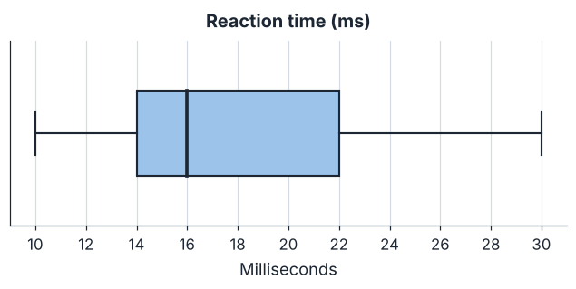
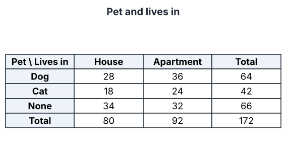
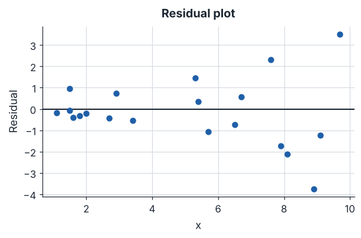
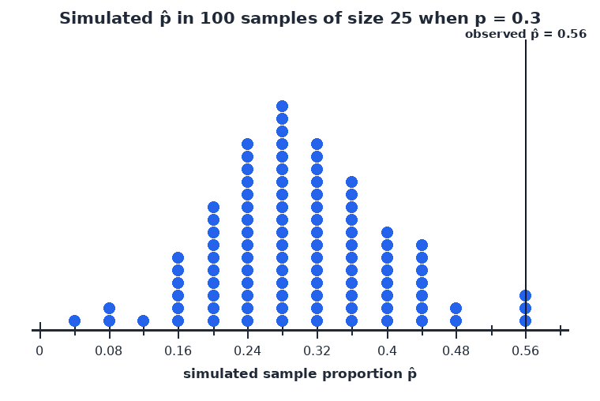
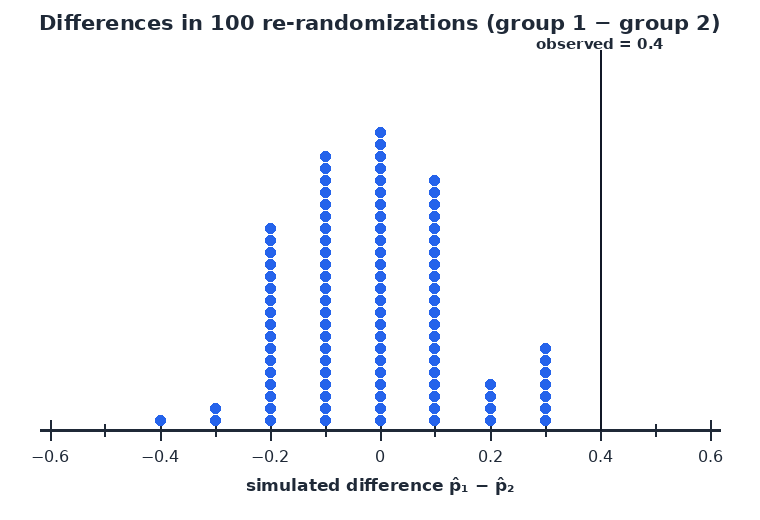
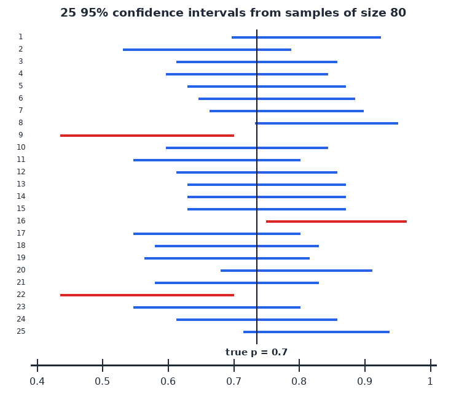

A dotplot of 15 quiz scores has a peak at 9 and a long tail stretching toward 2. What is the shape?
(A)Symmetric
(B)Skewed left
(C)Uniform
(D)Skewed right
Answer: (B) Skewed left
- The tail points toward small values.
Reaction times (hundredths of a second) for a class have Q1 = 40 and Q3 = 52. Find the lower fence for outliers.
Answer: (D) 22
- Outlier fences: Q1 − 1.5·IQR and Q3 + 1.5·IQR.
- IQR 12; 40 − 18 = 22.
Daily high temperatures (°F) for 12 days: 58, 61, 61, 64, 66, 67, 69, 70, 72, 72, 75, 79. Find the median.
(A)68.0
(B)67.0
(C)67.8
(D)6.5
Answer: (A) 68.0
- Linear transformation Y = a + bX: μ_Y = a + bμ_X and σ_Y = |b|σ_X (adding a constant does not change the SD).
- The data are already in order with n = 12, so the median is the middle (average of the two middle values): 68 = 68.0.
Use the box plot of reaction time (ms). About what percent of the values are greater than 22?

(A)100%
(B)75%
(C)25%
(D)50%
Answer: (C) 25%
- Each of the four parts of a box plot (whisker, box half, box half, whisker) holds about 25% of the values.
- 22 is Q3, so about 25% of values are above it.
Scores on a state exam are approximately Normal with mean 310 and standard deviation 25. What score is needed to be in the top 10%? Round to one decimal place.
(A)332.5
(B)342.0
(C)317.5
(D)278.0
Answer: (B) 342.0
- Find z with the given area to the left (Table A or invNorm), then value = mean + z·SD.
- The value has 90% of the distribution to its left. z ≈ 1.282 (Table A: 1.28). x = 310 + (1.282)(25) ≈ 342.0.
Use the two-way table. Among the "Apartment" students, what proportion are in the "None" row?

(A)0.485
(B)0.186
(C)0.535
(D)0.348
Answer: (D) 0.348
- Condition on the column: total 92.
- 32/92 = 0.348.
- Distractors use the wrong denominator (row total or grand total).
Find the correlation r for these data (x: 2, 4, 5, 7, 9; y: 3, 6, 7, 10, 12). Round to three decimal places.
(A)0.900
(B)0.995
(C)0.997
(D)-0.997
Answer: (C) 0.997
- Use technology (LinReg) or r = Σ(zₓ·z_y)/(n − 1).
- r ≈ 0.997: a very strong positive linear association.
A regression of weight (kg) on height (cm) has slope 0.9 kg per cm. If height were measured in meters instead, what would the slope be?
(A)9 kg per meter
(B)90 kg per meter
(C)0.009 kg per meter
(D)0.9 kg per meter
Answer: (B) 90 kg per meter
- 1 m = 100 cm, so a 1-unit increase in x (meters) is 100 times larger.
- Slope = 0.9 × 100 = 90 kg per meter.
A least-squares line was fit to the data. Which statement best describes the residual plot?

(A)The residuals are randomly scattered around 0, so a linear model is appropriate.
(B)The residuals add to more than 0, so the line is wrong.
(C)The residuals fan out as x increases, so predictions are less reliable for larger x.
(D)The residuals show a curved pattern, so a linear model is not appropriate.
Answer: (C) The residuals fan out as x increases, so predictions are less reliable for larger x.
- Look for a pattern: a curve, a fan shape, or random scatter around 0.
- The residuals fan out as x increases, so predictions are less reliable for larger x.
A back-to-back stemplot shows resting pulse rates for athletes (left leaves) and non-athletes (right leaves), with stems in tens (key: 6 | 2 means 62 bpm on the right; 2 | 6 means 62 bpm on the left).
Athletes | Stem | Non-athletes
8 7 | 4 |
9 6 5 2 | 5 | 8
4 3 1 | 6 | 2 4 6 9
0 | 7 | 0 3 5 8
| 8 | 1 4
Which statement is supported by the plot?
(A)The two groups have the same center.
(B)Athletes have a higher median pulse rate.
(C)Athletes tend to have lower pulse rates than non-athletes.
(D)Non-athletes' pulse rates are less variable than athletes' because they have more leaves.
Answer: (C) Athletes tend to have lower pulse rates than non-athletes.
- Athletes: 47, 48, 52, 55, 56, 59, 61, 63, 64, 70 (median 57.5).
- Non-athletes: 58, 62, 64, 66, 69, 70, 73, 75, 78, 81, 84 (median 70).
- The athletes' distribution is shifted lower, so they tend to have lower pulse rates.
Exam scores in a class have mean 71 and median 79. What is the most likely shape of the distribution?
(A)Skewed right
(B)Bimodal with no skew
(C)Symmetric
(D)Skewed left
Answer: (D) Skewed left
- The mean is pulled toward the long tail; a mean below the median points to a long left tail (a few very low scores).
Commute distances (miles) of 13 teachers: 1.2, 2.5, 3.1, 3.8, 4.4, 5, 5.6, 6.3, 7.9, 8.4, 9, 12.7, 24.5. Find the interquartile range (IQR). Use the medians of the lower and upper halves as the quartiles.
(A)3.10
(B)23.30
(C)5.25
(D)2.15
Answer: (C) 5.25
- IQR = Q3 − Q1, with Q1 and Q3 the medians of the lower and upper halves.
- Q1 = 3.45 and Q3 = 8.7, so IQR = Q3 − Q1 = 5.25.
A poll has a margin of error of ±3 points. About how many times larger must the sample be to cut it to ±1.5 points?
(A)2 times
(B)4 times
(C)1.5 times
(D)8 times
Answer: (B) 4 times
- The margin of error is proportional to 1/√n.
- Halving it needs √n twice as large, so n must be 2² = 4 times larger.
A systematic sample takes every kth name from a list of 2,400 names to get a sample of 80. What is k?
Answer: (C) 30
- k = population size ÷ sample size.
- k = 2400/80 = 30.
A gym surveys people at the gym at 6 a.m. to estimate how often adults in the town exercise. Which type of bias is most likely?
(A)Undercoverage
(B)Nonresponse bias
(C)Bias from a convenience sample
(D)Response bias from a sensitive question
Answer: (C) Bias from a convenience sample
- Decide whether the problem is who is selected (undercoverage, convenience, voluntary response), who answers (nonresponse) or how they answer (response bias).
- Here the people who are easy to reach are not representative of the population.
- Answer: bias from a convenience sample.
An observational study finds that people who take vitamin D supplements have fewer colds. A lurking variable that could explain this is
(A)people who take supplements may also exercise, eat better, or have better health habits
(B)the sample size
(C)the number of colds
(D)vitamin D
Answer: (A) people who take supplements may also exercise, eat better, or have better health habits
- A lurking variable is related to both the explanatory (supplements) and the response (colds).
An experiment randomly assigns paper airplanes to combinations of type of paper and wing design and measures the flight distance. What is the response variable?
(A)The treatments
(B)Flight distance
(C)Paper airplanes
(D)Type of paper
Answer: (B) Flight distance
- Experimental units receive the treatments; factors are the explanatory variables the researchers set; the response is what is measured.
- Units: paper airplanes. Factors: type of paper, wing design. Response: flight distance.
In a weight-loss study, subjects on a new diet also receive weekly coaching, while control subjects receive no contact. The diet group loses more weight. Why is the conclusion “the diet works” questionable?
(A)Coaching is a placebo, so it has no effect.
(B)The diet group is too large.
(C)Coaching (attention) is confounded with the diet; the control group should receive equal contact.
(D)Weight loss cannot be measured.
Answer: (C) Coaching (attention) is confounded with the diet; the control group should receive equal contact.
- Any extra condition given only to one group is confounded with the treatment.
Which is the strongest reason to use a matched pairs design with each subject receiving both treatments?
(A)The response variable is categorical.
(B)Only one treatment exists.
(C)Subjects are identical to each other.
(D)Subjects vary a lot in their baseline response, and each subject can be measured under both treatments without carryover effects.
Answer: (D) Subjects vary a lot in their baseline response, and each subject can be measured under both treatments without carryover effects.
- Using each subject as his or her own control removes between-subject variation, provided carryover is avoided.
An event has probability 0.25. About how many times will it occur in 200 trials?
Answer: (C) 50
- Expected count = (number of trials) × (probability).
- 0.25 × 200 = 50.
Which statement correctly distinguishes mutually exclusive events from independent events (both with positive probabilities)?
(A)They mean the same thing.
(B)Independent events cannot occur together.
(C)Mutually exclusive events cannot both occur; independent events can both occur and knowing one occurred doesn't change the other's probability.
(D)Mutually exclusive events are always independent.
Answer: (C) Mutually exclusive events cannot both occur; independent events can both occur and knowing one occurred doesn't change the other's probability.
- If A and B are disjoint with positive probabilities, P(B | A) = 0 ≠ P(B), so they are dependent.
A two-way table classifies 240 students by grade and whether they have a pet: Has a pet: Freshman 42, Sophomore 35, Junior 28. No pet: Freshman 38, Sophomore 45, Junior 52. A student is selected at random. Find P(freshman or has a pet). Round to four decimal places.
Table columns (in order): Freshman; Sophomore; Junior.
Has a pet: 42, 35, 28.
No pet: 38, 45, 52.
(A)0.1458
(B)0.1750
(C)0.5958
(D)0.7708
Answer: (C) 0.5958
- Addition rule: P(A or B) = P(A) + P(B) − P(A and B).
- P(F) + P(Pet) − P(F and Pet) = 80/240 + 105/240 − 42/240 = 143/240 ≈ 0.5958.
A simulation of 1,000 trials gives 23 trials in which an event occurred. What is the best interpretation?
(A)The event is impossible.
(B)The probability is 23.
(C)The probability of the event is estimated to be about 0.023.
(D)The event will occur exactly 23 times in the next 1,000 trials.
Answer: (C) The probability of the event is estimated to be about 0.023.
- Relative frequency from many trials estimates probability.
X = number of girls in a family with 3 children (each child equally likely to be a girl, independently). What is P(X = 2)?
(A)0.125
(B)0.375
(C)0.25
(D)0.5
Answer: (B) 0.375
- Outcomes with exactly 2 girls: GGB, GBG, BGG → 3 of 8.
- 3/8 = 0.375.
The number of KenKen hints X a student uses on a puzzle has this probability distribution. x: 0, 1, 2, 3; P(x): 0.45, 0.3, 0.15, 0.1. Find the expected value E(X). Round to two decimal places.
(A)1.35
(B)2.00
(C)0.90
(D)1.50
Answer: (C) 0.90
- Expected value: E(X) = Σ x·P(x).
- E(X) = Σ x·P(x) = 0(0.45) + 1(0.3) + 2(0.15) + 3(0.1) = 0.90.
n = 50 and p = 0.2. Find the binomial SD. Round to three decimal places.
Answer: (B) 2.828
- Binomial: μ = np and σ = √(np(1 − p)).
- √8 = 2.828.
62% of a city's voters support a park bond. In an SRS of 400 voters, what is the probability that between 58% and 66% support it? Use technology (normalcdf). Round to four decimal places.
(A)0.9503
(B)0.0993
(C)0.9007
(D)0.6800
Answer: (C) 0.9007
- Standardize with z = (x − μ) ÷ σ, then find the area under the standard Normal curve (Table A or normalcdf).
- Large Counts: np = 248 and n(1 − p) = 152 are both ≥ 10, so p̂ is approximately Normal with mean 0.62 and SD √(0.62·0.38/400) ≈ 0.0243. z = ±0.04/0.0243 ≈ ±1.648; normalcdf gives P(0.58 < p̂ < 0.66) ≈ 0.9007. (Table A with z rounded to ±1.65 gives 0.9011.)
For a strongly right-skewed population, which sample size gives an approximately Normal sampling distribution of x̄?
(A)n = 10
(B)n = 5
(C)n = 60
(D)No sample size works for skewed populations
Answer: (C) n = 60
- Central Limit Theorem: the more skewed the population, the larger n must be for x̄ to be approximately Normal (n ≥ 30 is a common guide).
- The CLT requires larger n for skewed populations (n ≥ 30 rule of thumb; more for strong skew) = n = 60.
In a random sample of n = 500 voters, p̂ = 0.62 support a new library. For 95% confidence: margin of error? Round to four decimal places.
(A)0.0217
(B)0.0425
(C)0.0559
(D)0.0357
Answer: (B) 0.0425
- Margin of error = (critical value) × (standard error).
- 1.96√(0.62·0.38/500) = 0.0425.
A researcher wants an interval that is narrower without reducing the confidence level. What can she do?
(A)Use a nonrandom sample
(B)Increase the sample size
(C)Use a lower confidence level
(D)Report the point estimate only
Answer: (B) Increase the sample size
- ME = z*·SE and SE shrinks as n grows.
A poll wants a 95% confidence margin of error of at most 0.05, using p = 0.5. What is the minimum sample size n?
Answer: (A) 385
- Solve the margin-of-error formula for n: n = (z*/ME)²·p*(1 − p*) for a proportion, or (z*σ/ME)² for a mean; then round up.
- 384.16 → 385.
With n = 100, a 95% t interval and a 95% z interval (using sₓ for σ) are computed from the same data. How do they compare?
(A)Nearly identical; t* (≈ 1.984) is only slightly larger than z* (1.96).
(B)The t interval is twice as wide.
(C)The z interval is wider.
(D)They have different centers.
Answer: (A) Nearly identical; t* (≈ 1.984) is only slightly larger than z* (1.96).
- For large df, t approaches z.
Last year 38% of households in a county have a pet dog. A researcher wants to test whether the proportion this year is less than 0.38. Which hypotheses are correct?
(A)H₀: p = 0.38; Hₐ: p ≠ 0.38
(B)H₀: p = 0.38; Hₐ: p < 0.38
(C)H₀: p < 0.38; Hₐ: p = 0.38
(D)H₀: p̂ = 0.38; Hₐ: p̂ < 0.38
Answer: (B) H₀: p = 0.38; Hₐ: p < 0.38
- Hypotheses are about the population parameter p, never the statistic p̂.
- H₀ states no change: p = 0.38. Hₐ states the researcher’s claim: p < 0.38.
A survey service reports that 30% of teens own a bike. In a random sample of 25 teens, 14 own a bike (p̂ = 0.56). To test H₀: p = 0.3 versus Hₐ: p ≠ 0.3, a student simulated 100 samples assuming H₀ is true. Use the dot plot to estimate the p-value.

(A)about 0.03
(B)about 0.01
(C)about 0.04
(D)about 0.96
Answer: (C) about 0.04
- The dot plot shows what p̂ looks like when H₀: p = 0.3 is true.
- Hₐ: p ≠ 0.3, so count the dots at least as far from 0.3 as p̂ = 0.56 (both tails): 4 of 100.
- Estimated p-value ≈ 4/100 = 0.04.
A t test with n = 12 uses strongly skewed data with an outlier. What is the concern?
(A)The 10% condition fails
(B)There is no concern
(C)The sample is too large
(D)The Normal condition fails, so the p-value may be unreliable
Answer: (D) The Normal condition fails, so the p-value may be unreliable
- Small n, strong skew.
A test with α = 0.10 has power 0.85 against a particular alternative. What is P(Type II error) for that alternative?
(A)0.90
(B)0.15
(C)0.85
(D)0.10
Answer: (B) 0.15
- P(Type II error) = 1 − power.
- P(Type II) = 1 − 0.85 = 0.15.
A gym randomly assigned 20 members to text reminders and 20 to no reminders. 17 reminded members and 9 others came back within a week. The observed difference is p̂₁ − p̂₂ = 17/20 − 9/20 = 0.4. To test H₀: p₁ = p₂ versus Hₐ: p₁ ≠ p₂, the results were re-randomized 100 times assuming the treatment has no effect. Estimate the p-value.

(A)about 0.99
(B)about 0.01
(C)about 0.40
(D)about 0.00
Answer: (B) about 0.01
- If the treatment has no effect, the successes would be split between groups at random; the dot plot shows the differences that happen by chance alone.
- Count dots at least as far from 0 as 0.4 (both tails): 1 of 100.
- Estimated p-value ≈ 0.01. A small p-value gives evidence that the treatment works better.
x̄₁ = 50, s₁ = 10, n₁ = 25; x̄₂ = 44, s₂ = 12, n₂ = 36. Find the two-sample t. Round to two decimal places.
(A)0.38
(B)2.12
(C)0.27
(D)2.09
Answer: (B) 2.12
- Two-sample t statistic: t = (x̄₁ − x̄₂) ÷ √(s₁²/n₁ + s₂²/n₂).
- 6/√(4 + 4) = 2.12.
A chi-square test on a two-way table with 4 rows and 3 columns gives χ² = 6.04. Find the p-value. Round to four decimal places.
(A)0.2094
(B)0.5813
(C)0.8707
(D)0.4187
Answer: (D) 0.4187
- df = (4 − 1)(3 − 1) = 6.
- p-value = P(χ² ≥ 6.04) with df = 6.
- p-value ≈ 0.4187.
A 95% interval for p is (0.31, 0.39) from n = 500. Without recalculating, which would be the 95% interval from n = 2,000 with the same p̂?
(A)About (0.33, 0.37)
(B)About (0.31, 0.39)
(C)About (0.35, 0.39)
(D)About (0.29, 0.41)
Answer: (A) About (0.33, 0.37)
- Standard deviations of sampling distributions shrink like 1/√n: multiplying n by 4 halves the SD (and the margin of error).
- Quadrupling n halves the ME: 0.04 → 0.02, same center 0.35.
- Answer: About (0.33, 0.37).
Twenty-five students each took a random sample of size 80 and built a 95% confidence interval for p. The true value is p = 0.7. How many of the intervals capture p?

Answer: (A) 22
- An interval captures p when it crosses the vertical line at p = 0.7.
- 3 intervals (red) miss; 22 capture p.
- 22/25 = 88% captured p. A 95% method captures p about 95% of the time in the long run, so we expect about 23.75 of 25 intervals to capture it; with only 25 intervals the count varies by chance. 22 is within the range chance usually gives (21 to 25 of 25), so the result is consistent with a 95% method.
In an SRS of 500 students at a large university, 180 said they buy used textbooks. Construct a 90% confidence interval for the population proportion. Round endpoints to three decimal places.
(A)(0.305, 0.415)
(B)(0.318, 0.402)
(C)(0.359, 0.361)
(D)(0.325, 0.395)
Answer: (D) (0.325, 0.395)
- Conditions: random sample; 10%: 500 < 10% of the population; Large Counts: 180 and 320 ≥ 10. p̂ = 180/500 = 0.3600.
- SE = √(p̂(1 − p̂)/n) = 0.02147. z* = 1.645. 0.3600 ± 1.645(0.02147) = 0.3600 ± 0.0353 → (0.325, 0.395).